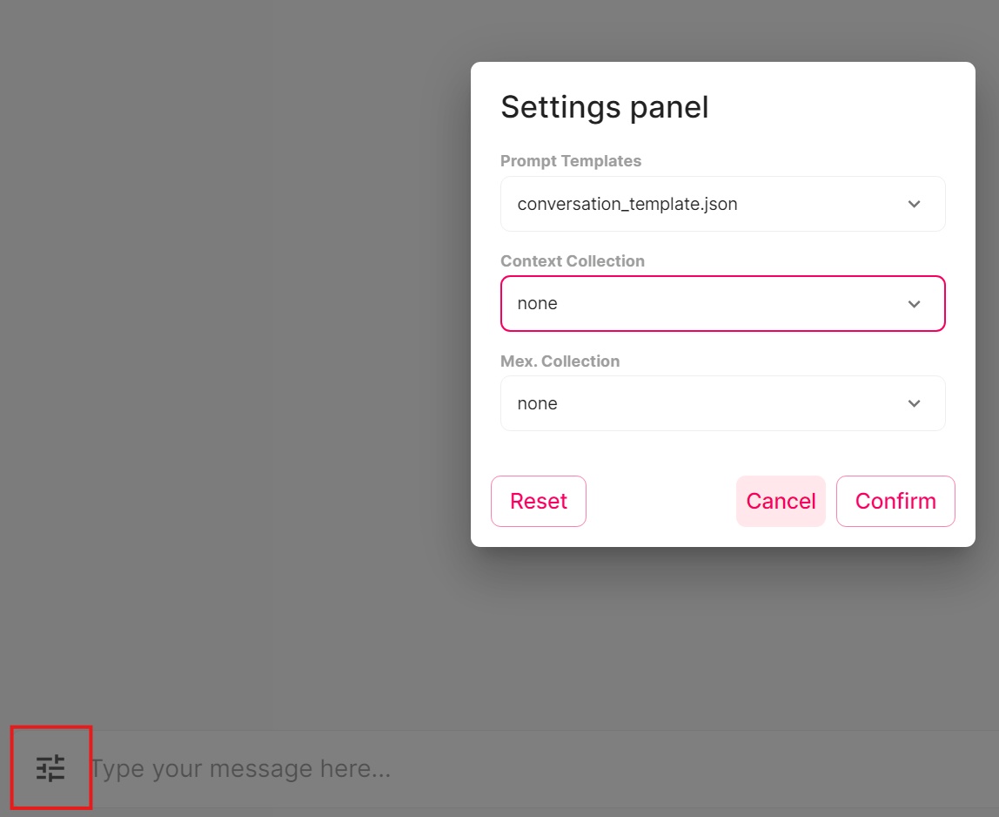

Basic Configs
You can change the configuration settings in .env file.
The available embeddings are llama,spacy and hugginface. Make sure that the config for the chat matches the embeddings that were used to create the chroma collection.
VECTOR_K is the value for vector storage documents for how many documents should be returned. You might need to change this based on your context and vector store chunk size. BUFFER_K is the size for conversation buffer. The prompt will include last K qustion answer pairs. Having large VECTOR_K and BUFFER_K can overfill the prompt. The default character card is Skynet_V2.png. This is just a basic template.
| Config Field | Description |
|---|---|
| MODEL_DIR | The dir for the models |
| MODEL | model_name.gguf |
| MODEL_TYPE | alpaca/mistral |
| CHARACTER_CARD_DIR | The directory for chracter cards |
| CHARACTER_CARD | character_card.png/yaml/json |
| PERSIST_DIRECTORY | dir for chroma embeddings |
| PROMPT_TEMPLATE_DIRECTORY | Prompt template are stored here |
| REPLACE_YOU | Replace references to "You" in card with "User" |
| KEY_STORAGE_DIRECTORY | dir for NER keys for chroma |
| COLLECTION_CONFIG | Path to run config file for collection and prompt |
| EMBEDDINGS_TYPE | llama/spacy/hugginface |
| EMBEDDINGS_MODEL | spacy/hugginface model name (needs to be installed) |
| CUSTOM_CSS | Url to the custom css file to be used by the application. |
| VECTOR_SORT_TYPE | Vector searach sort type distance/bm25/fusionrank |
| VECTOR_K | Fetch k closest embeddings for mmr |
| BUFFER_K | Buffer last k exchanges to conversation context |
| FETCH_K | Fetch k closest embeddings for similiarity |
| LAMBDA_MULT | Lambda for Chroma |
| LAYERS | Number of layers to offload to gpu |
| SEED | Seed used for generation. Default random (-1) |
| N_PARTS | How many parts the model is divided into. Default auto (-1) |
| USE_MLOCK | Load the whole model into ram. Default False |
| USE_MMAP | Allows only the necessary parts to be loaded into memory and offloading the rest. Default false |
| TEMPERATURE | Adjust the randomness of the generated text (default: 0.8) |
| TOP_P | A higher value for top-p (e.g., 0.95) will lead to more diverse text, while a lower value (e.g., 0.5) will generate more focused and conservative text. The default value is 0.9. |
| TOP_K | A higher value for top-k (e.g., 100) will consider more tokens and lead to more diverse text, while a lower value (e.g., 10) will focus on the most probable tokens and generate more conservative text. The default value is 40. |
| REPEAT_PENALTY | The repeat-penalty option helps prevent the model from generating repetitive or monotonous text. A higher value (e.g., 1.5) will penalize repetitions more strongly, while a lower value (e.g., 0.9) will be more lenient. The default value is 1.1. |
| LAST_N_TOKENS_SIZE | Last n tokens to consider for penalizing repetition |
| VERBOSE | Verbose mode. Default True |
| ROPE_CONTEXT | Rope context for rope scaling |
| N_CTX | Context size |
| N_BATCH | Message write batch size |
| MAX_TOKENS | Max tokens. Default 256 |
General Configs
Other configs are found in the run_files folder. These include Webscrape configs, ner parse configs and filter configs.
Filters folder defines the general webscrape filters to clean the documents. This file uses regex and can easily be modified to add extra filtering.
Parse_configs defines the expected csv column structure and ner type parsing. This includes noun engrams, entities, noun chunks and parse type.
Web scrape configs define the web pages fo a scrape. This is convinient if you want to scrape multiple pages.
Run Config
The run config in run_config.json in the run_files folder defines the options for chat run settings. The run config sets the defaults for message collection, context collection and for the prompt template. The config also gives the list of alternative collection and prompt settings. These can be changed while the chat is running from the chat settings menu. 